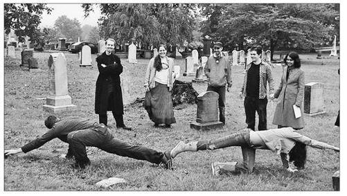

HAPPINESS HACK # 2 : PLAYING OUR RESPECTS
HAPPINESS HACK # 2: PLAYING OUR respect 幸福黑客2: 表达我们的敬意
Tombstone Hold ’Em is a variation of Texas Hold ’Em poker designed to be played in cemeteries. It is also, without a doubt, the most controversial game I’ve ever designed.
To say that some people find the idea of playing games in a real-world cemetery inappropriate would be putting it mildly. In the United States in particular, we have a culture of grieving as quietly, as privately, and as solemnly as possible. Cemeteries—despite having been popular as public parks and recreation spaces in the nineteenth and early twentieth centuries—today are largely single-use memorial spaces. They’re meant to be briefly occupied by mourners first and foremost. Some older or more scenic cemeteries may draw other visitors, but they generally move through them as inconspicuously as possible.
But I’ve never been prouder of a game design, and for one reason: players widely report being able to think about death and lost loved ones in a more positive way after playing Tombstone Hold ’Em. And that’s the point of the game. It’s a happiness hack meant to create more social, and more enjoyable, ways of remembering death.
Thinking about death is one of the most highly recommended happiness activities, but it’s also one of the most difficult to convince ourselves to undertake. We’re accustomed to pushing thoughts of death out of our minds, not cultivating them. Tombstone Hold ’Em is meant to make remembering death easier and more rewarding, by taking advantage of the largely underutilized social and recreational potential of cemeteries.
The central activity of Tombstone Hold ’Em poker is learning how to “see” a playing card in any tombstone, based on its shape (the suit) and the names and date of death (the face value). Once you can read stones as cards, you can spot “hands” all around you. The game works in any cemetery, as long as there are clearly marked tombstones. Here’s how it plays out:The key to understanding Tombstone Hold ’Em is that there are only four shapes you get on top of a tombstone. Pointy equals spades, statue on top equals clubs, rounded equals hearts, flat equals diamonds. That’s how you tell the suit.
Now take the last digit in the year of death. That’s your face value. Died 1905—that’s a five. Died 1931—the one is the ace. But two names on the stone? Ignore the dates—that’s a jack. Three names is a queen. Four or more names is kings.
Now maybe you have to clear away some leaves or dirt or litter in order to read the cards. That’s good—it helps keep those old stones taken care of. Just be gentle with ’em.
Now, for a hand. You play it like regular Texas Hold ’Em, but in reverse. First, lay out the whole “flop” upfront. Five regular playing cards. Now everyone antes up, and then each pair (you’ve got to have a partner to play) has three minutes to find their two best hold cards.
You can pick any two cards you want from anywhere in the cemetery—but you have to use the stones, not regular playing cards this time. The trick is you have to be able to touch both tombstones and each other at the same time. So maybe I’ve got a hand on a ten of hearts and the other on my buddy’s toe, while he’s stretched out to touch another heart for the flush. If we can’t make the reach, we can’t claim the cards.
So find any pair you like and put a pair of poker chips on ’em to claim ’em. Now no other pairs can pick your two stones for their own pocket pair.

Two players show their best hand during a Tombstone Hold ’Em game in the historic Congressional Cemetery in Washington, D.C.
(Kiyash Monsef, 2005)
All this has to happen fast, because after three minutes whoever’s got the working watch yells out, “Last call!” and everyone runs hell for leather back to the flop and says what they found. Only the best hand has to prove it, and winner takes all the antes. In the case of ties, first back to the flop is the winner.
One more thing: no betting or bluffing in traditional Tombstone Hold ’Em. Only way to win is to earn it. So go out there with your partner and make sure you find the best pair.16
16岁
Tombstone Hold ’Em allows players to actually get to know the people at rest in the cemetery. You read the stones, you learn the names, and you start to wonder about their stories—because every time you pick a pocket pair, you’re recruiting two dearly deceased as allies in the hand. Playing the game in a perfectly manicured cemetery is good, but playing it in a cemetery that could use a little loving care is better—it’s more challenging, and more rewarding. As you clear away clutter from the stones to make them legible again, you’re not just playing in the cemetery—you’re taking care of it.
The game is meant to be played by at least four people, and ideally in larger groups—the larger the group, the more enlivened the cemetery feels. I’ve organized large-scale Tombstone Hold ’Em games in historic cemeteries in Kansas City, Atlanta, New York City, Los Angeles, and San Francisco, for crowds ranging between twenty and two hundred. With a group that big, you’ve got a dozen or more “flops” going at the same time, spread out around the cemetery, on various benches, tree stumps, or mausoleum steps. Whenever I’ve organized a larger game, I’ve done so with the official permission and assistance of the cemeteries. But I’ve also played much smaller, unofficial games everywhere from Austin to Helsinki to Barcelona to Vancouver. If it’s a small group—say, four, six, or even eight players—it doesn’t raise too many eyebrows, especially if you’re sure to play well out of the way of anyone who might be visiting the cemetery for more traditional purposes.
But before I get too much further dissecting the experience of playing Tombstone Hold ’Em, perhaps I should explain how I came to be designing a crowd game for cemeteries—and how happiness research convinced me to take on such an unusual project.
In 2005, I was working as a lead designer for a game company called 42 Entertainment. We accepted a commission to develop an alternate reality campaign for the Western-themed video game Gun, developed by Neversoft and published by Activision. The goal of the alternate reality campaign was to give gamers the chance to directly experience the historical world of Gun, the American Old West of the 1880s. The centerpiece of the alternate reality campaign was an online poker platform, styled in a Western theme. Gamers were invited to compete in online Texas Hold ’Em tournaments set in the past, competing at the same table with historical characters from the 1880s. It was a unique combination of historical role playing and card playing.
Alternate reality games usually have a real-world component, and since Gun featured real-world characters who’d died in the Old West, we came up with the idea of using real cemeteries as a site for some kind of live-action experience. Because of my expertise in running reality-based games, I was put in charge of figuring out what the live cemetery events would be.
On one hand, I was excited by the concept. In a world where video gamers are much maligned for being desensitized to violence, it struck me as a particularly provocative idea to send gamers to the real-world graves of characters they had killed in Gun. But I also felt some trepidation, hitting up against the cultural norms involving cemeteries. I really didn’t want to organize some kind of rowdy, unauthorized “flash mob,” so I started researching historic cemeteries and brainstorming what kinds of things gamers could do in them.
One of the first things I discovered was that cemeteries in the United States were absolutely desperate to convince people to spend more time in them. According to cemetery industry statistics, the average grave receives just two visits in its lifetime—total, by any friend or family member—after the initial flurry of visits that immediately follows the burial.17
17 We think of cemeteries as spaces for mourning, but the truth is, mourners do not regularly return. Meanwhile, others are generally discouraged by social norms from spending significant time in the space—it’s considered either unseemly or morbid.
As a result, cemeteries are for the most part empty. And lack of participation in cemetery spaces has become a huge problem from an industry standpoint (cemeteries are running out of money), a community standpoint (the less visited a cemetery is, the more likely it is to be poorly maintained and vandalized), and, perhaps most of all, from a happiness standpoint (according to research, the less time we spend in cemeteries, the more likely we are to suffer from fear and anxiety about death).
I was first tipped off to these problems by a New Yorker article about the decline of American cemeteries, which was published while I was in the midst of my research. In the article, Tad Friend documents how Americans today spend less time in cemeteries than ever before, despite the vast expanses of green space they take up and the escalating costs of maintaining them. “Who are cemeteries for? The living or the dead?” he asks. We’ve apparently convinced ourselves they’re for the dead, since we don’t visit them. But that’s ridiculous, as Tad Friends argues: “They’re for the living; the dead can’t enjoy them. The trick for cemeterians is to get the living to come to them.” He documents a range of fledgling efforts on the part of cemeteries nationwide to become more relevant to the living. There are, for example, movies projected at night on the sides of mausoleums in Hollywood, 5K graveyard races in Kansas City, and dog-walking clubs in historic Washington, D.C., cemeteries.18
18岁
As I researched the subject further, I discovered that many cemeteries were fighting for their very survival, and largely as a result of the American desire to keep the reality of death as far removed from our daily lives as possible. For decades private cemeteries have been quietly sold to accommodate new highways, schools, and condominiums; the graves are typically relocated to more remote areas. Meanwhile, many public and historic cemeteries receive insufficient funds to maintain the grounds properly; with such low visitation rates, they have a hard time documenting their value to the community. And abandoned cemeteries once belonging to now defunct churches are being adopted by local community groups in an effort to repair them and preserve their historical value.19
19
People who care about and run cemeteries make many good arguments in favor of protecting them: they are a unique repository of historical data, they have significant architectural value, and, not least of all, there is the ethical imperative to honor contracts to families who have buried their loved ones with the expectation that they will be cared for in perpetuity.
All of these are worthy reasons to enliven cemetery spaces today—but what really convinced me was the happiness research.
In his report on global happiness trends, Eric Weiner writes that death is “a subject that, oddly, comes up an awful lot in my search for happiness. Maybe we can’t really be happy without first coming to terms with our mortality.”20
20 It’s a strange idea, but it’s not a new one. In The Happiness Myth, happiness historian Jennifer Michael Hecht devotes an entire chapter to “the age-old advice to remember death, to keep it in the forefront of our minds for the sake of bettering the life we lead now.”21
二十一岁 She traces the idea all the way back to Plato, who advised students to “practice regular meditation upon death,” and to Buddha, who said, “Of all mindfulness meditations, that on death is supreme.” Even Epicurus, the ancient Greek philosopher best known for encouraging followers to seek simple pleasures, put death at the center of his vision of happiness, arguing that it is only when we shake free our fear of death that we can truly enjoy life.
According to Hecht, since ancient times meditations on death have served the same purpose: to replace fear and anxiety with a kind of calm, mellow gratitude for the life that we’re given. And today, these traditions have the backing of contemporary science. Positive psychologists have found that grappling with the reality of death forces a kind of mental shift that helps us savor the present and focus our attention on the intrinsic goals that matter most to us. Hecht has coined a term for this realignment of priority and attention: posttraumatic bliss. “There are feelings in this life—good and bad—that cannot be conquered by intellect or force of will,” she writes. “Almost dying can realign you in a way that is the positive incarnation of trauma: posttraumatic bliss.”22
22
Researchers have documented the phenomenon of posttraumatic bliss among patients confronting a terminal medical diagnosis. Something seems to click in their minds, empowering them to enjoy their lives more. It’s not just that they’ve realized how precious life is; there seems to be some kind of significant mental clearing that occurs along with a new ability to focus on positive goals. In Happier, Tal Ben-Shahar quotes Irvin D. Yalom, a psychotherapist who often works with dying patients: “They are able to trivialize the trivial, to assume a sense of control, to stop doing things they do not wish to do, to communicate more openly with families and close friends, and to live entirely in the present rather than in the future or the past.”23
23 This rare and intense positive focus on getting the most out of life is hard to come by in our ordinary lives, Ben-Shahar notes—especially when we spend so much time collectively trying to avoid thinking about death.
Can we learn to savor life and achieve that intensity of positive focus without the trauma of a terminal diagnosis or a near-death experience? That seems to be the idea behind classical and religious advice, and today positive psychologists like Ben-Shahar recommend activities such as imagining ourselves on our deathbeds as a way to try to provoke this positive clarity.
But as a happiness activity, solitary deathbed reflection leaves a lot to be desired. It’s simply not something most of us are inclined to do—or if we are, we’re not likely to take it seriously or do it for very long. We can’t just tell ourselves to remember death—the ancient philosophers, Hecht notes, insisted that “it takes active meditations and gestures.”24
24
Moreover, it’s hard to force ourselves to grasp the reality of our own individual mortality. It’s easier to acknowledge the universality of death—and that’s where cemeteries come in. Cemeteries present us with vivid, extreme-scale, irrefutable historical evidence of the one thing that connects us all, the one thing that makes it possible to enjoy life to the fullest—if only we felt inclined to spend more time in them.
At this point in my research, I was convinced that spending more time in cemeteries was a worthy social goal—and that a graveyard game could do a lot more than bring a historical video game to life. The Gun project was the perfect opportunity for a happiness hack. And the key to making this happiness hack work would be to generate the kind of positive emotions we typically associate with crowd games—excitement, interest, curiosity, social connection—and simply unleash it in the physical context of a cemetery.
Once I started playtesting in cemeteries, the design pieces fell quickly into place. I knew I would need a focused activity that, in some respect, had nothing to do with remembering death—that had to be the side effect, not the purpose, of the game. And since Texas Hold ’Em poker was a larger theme for the alternate reality campaign, it made perfect sense to bring the familiar game to the cemeteries.
But the poker needed to be site-specific and really needed to use the natural affordances of a cemetery—otherwise, you’d just play the game somewhere else, defeating the entire purpose. And that’s where the idea of using stones as playing cards came in. Tombstones are the single design feature that all cemeteries have in common, guaranteeing the game would be playable anywhere. And paying close attention to the content of the tombstones directly supported the goal of the happiness hack—each card you “decoded” meant literally staring death in the face, but in a way that wouldn’t provoke fear or anxiety.
As for the other design choices, I made it a partner game because this seemed like a good way to ensure that it was not just social, but also cooperative. Cooperation always provokes positive emotion and meaning in games, especially if a physical connection is involved. Meanwhile, touch is one of the fastest ways to build social bonds—holding hands, touching someone’s back, and patting a shoulder all release the oxytocin chemical that makes us like and trust each other. But, as Dacher Keltner’s positive-emotion research has shown, “We live in a touch-deprived culture.”25
25 To put it another way, as Michelangelo said, “to touch is to give life”—and I couldn’t think of a better way to enliven a cemetery than to unleash a flood of oxytocin in the crowd.26
26
When a game is in motion, there’s an air of happy participation that simply isn’t the norm for cemeteries. It’s a distinct break from the typical atmosphere, usually one of quiet, solitary reflection or collective mourning. At the same time, small pockets of conversation often break out, among friends as well as strangers—people sharing small pieces of their own experiences with mourning and loss. This has unfolded at every Tombstone Hold ’Em game I’ve been to—it’s almost impossible not to, given the setting. In this way, the game perfectly serves its purpose: it simultaneously activates positive emotions and social bonds while putting us in the perfect environment to get our recommended daily reminder that we are all dust, and to dust we shall return.
Which brings us back to the potential controversy. Tombstone Hold ’Em was featured in a number of news articles, and some online readers commented that the game seemed “disrespectful,” “insensitive,” or even “obscene.” Which raises the question: Is it appropriate to play games in a cemetery? Based on my direct experiences, absolutely. At more than a dozen trials I’ve organized of Tombstone Hold ’Em, participants have overwhelmingly agreed that this particular game feels right in the space—especially when the net result is that the tombstones receive more attention from the living and are better taken care of as a result.
Perhaps more than any other project I’ve worked on, Tombstone Hold ’Em has demonstrated one of the most vital powers of gameplay: it gives us explicit permission to do things differently. We are accustomed to being asked to behave and think unconventionally in a game. We’re used to being creative and playing outside of social norms when we’re inside the socially safe “magic circle” of a game. And the more people who come together to play an unconventional game like Tombstone Hold ’Em, the safer it feels. A crowd carries the social authority to redefine norms.
Does it really work as a happiness hack? I’ve played Tombstone Hold ’Em with hundreds of people and spoken with nearly every one of them about it immediately afterward. (The games are usually followed by social gatherings in restaurants or bars, a way to decompress after what can be an intense, emotional experience.) The most common reaction is that players felt “more comfortable” being in the cemetery after playing. Other words most commonly used to describe the experience were “strangely happy” and “relaxed,” as well as “grateful” and “connected” to the people at rest. I’ve even talked to visitors at the cemeteries who spotted some of our players in the distance and asked me about the game; just once did a visitor express dismay. Most often, I heard a variation of the following sentiment: that it’s nice to see a loved one’s final resting place not lonely and empty, but full of people running, smiling, laughing, and having fun together.
Since I first shared the rules online, the game has spread mostly by word of mouth—like most good hacks—and I periodically hear about Tombstone Hold ’Em games popping up in cemeteries around the world. It’s the best outcome possible for any happiness hack: a solution that’s been tested, proven, and shared, and now continues to be passed around to those who can benefit from it. Today, Tombstone Hold ’Em lives on as a viral happiness solution—it’s free to adopt or adapt, and no products or special supplies or technology is required. All you need are a set of regular playing cards, something to use as poker chips (some people use coins or colored glass stones), and a way to invite friends or strangers to play their respects with you.